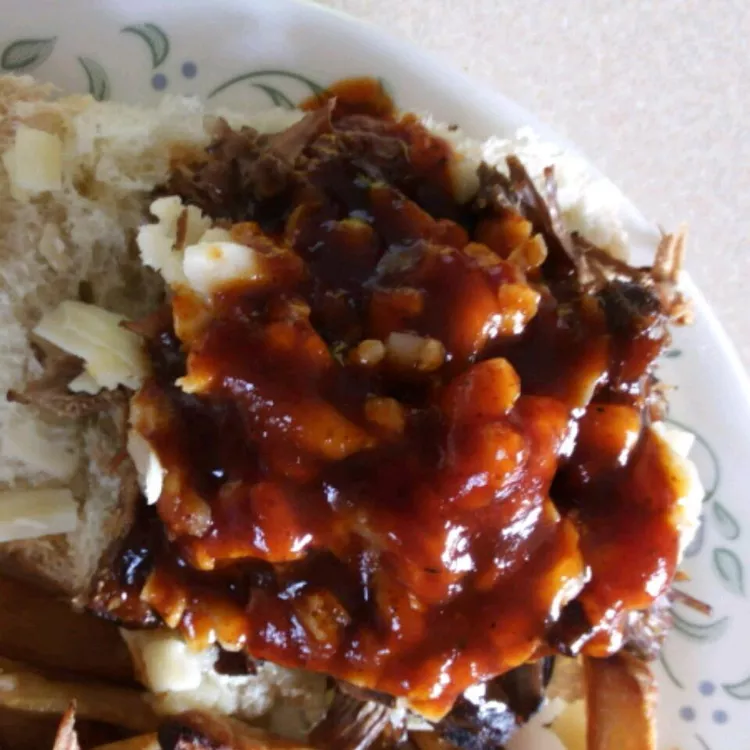

Pulled Beef Sandwiches

Description:
Barbeque beef, southern-style, made in the slow cooker.
Delicious beef that works in sandwiches or with a side of your choice!
Ingredients:
- cooking spray
- ½ cup beef broth
- 1 teaspoon liquid smoke flavoring
- 1 tablespoon olive oil
- 1 (4 pound) boneless beef chuck roast
- 3 tablespoons barbeque seasoning (such as Grill Mates® Smokehouse Maple)
- 2 tablespoons Worcestershire sauce
- 2 cups barbeque sauce
- 8 Kaiser rolls, split
Steps:
- Spray the inside of a 6-quart oval slow cooker crock with cooking spray.
- Mix beef broth and liquid smoke in a small bowl; pour into prepared crock.
- Drizzle olive oil over the beef chuck roast. Rub barbeque seasoning over the roast and lie gently into the liquid in the slow cooker. Drizzle Worcestershire sauce over the roast.
- Cook on Low until the meat pulls apart easily, 7 to 8 hours. Remove roast to a cutting board and shred into strands with a pair of forks.
- Drain liquid from the slow cooker crock, reserving 1/2 cup and discarding remainder. Stir reserved liquid with barbeque sauce in a bowl.
- Return shredded beef to the slow cooker. Drizzle barbeque sauce mixture over the meat and stir.
- Cook on High until the liquid is bubbling, about 30 minutes. Spoon beef onto split Kaiser rolls.